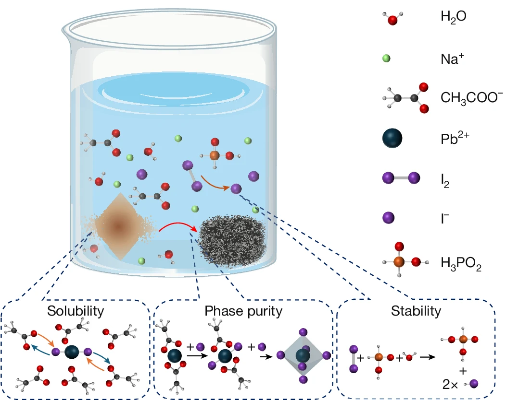

01
光电探测器Photodetectors
研究高性能钙钛矿光电探测器及相关光电器件，通过组分工程、界面调控和器件结构设计，提升响应速度、探测灵敏度与长期稳定性。We develop high-performance perovskite photodetectors and related optoelectronic devices through composition engineering, interface control and device architecture design.
- Perovskite optoelectronics
- Broadband and low-light detection
- Interface and defect engineering